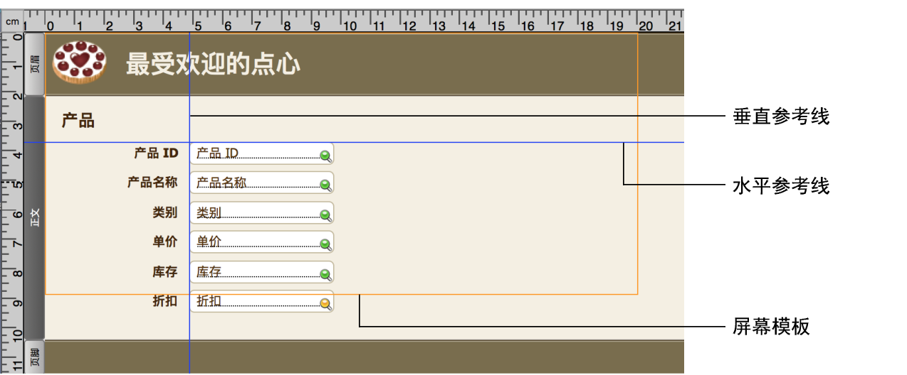

•状态工具栏中的"格式刷"工具  可快速复制布局对象的属性。请参阅拷贝布局中的格式设置属性。
可快速复制布局对象的属性。请参阅拷贝布局中的格式设置属性。
除了规划创建定制化 App 中所述的数据库结构之外，先在纸上或屏幕上画出布局的草图，然后再在 FileMaker Pro Advanced 中创建它们。几个草图便可帮助解决设计问题，传达想法，并节省时间。画草图的过程还可以帮助您创建视觉上平衡的布局，并提供一个用户可以遵循的清晰途径。
设备因硬件和网络性能、屏幕大小和分辨率而异。如果您标识了哪些设备将访问布局，可以更好地设计布局以配合这些设备使用。例如，为台式计算机设计的布局可能不十分适用于 iOS 设备。
要为用户提供最优解决方案，请设计您的布局以适合各种设备。为各种设备尺寸设计各个布局，并根据布局的高度和宽度为布局对象配置自动调整大小选项。这将确保布局可扩展至填满每个设备的整个屏幕。请参阅设置布局对象的自动调整大小选项。
如果有多种设备要访问布局，则考虑为每个设备创建一个布局。您可以使用 OnLayoutEnter 脚本触发器、Get (系统平台) 函数和转到布局脚本步骤将用户指向合适的布局。
每种 FileMaker 产品都有独特的功能。例如，FileMaker Go 可以捕获签名，FileMaker WebDirect 可从任意兼容的 Web 浏览器访问。了解每种 FileMaker 产品的功能很重要，这样您才能设计出最适合每种产品的布局。
请参阅《FileMaker Go 开发指南》、《FileMaker WebDirect 指南》、《FileMaker Server 自定义 Web 发布指南》和《FileMaker Data API 指南》。
单击 上的箭头，以显示屏幕模板，从而帮助您针对 iPad、iPhone 和多种常见的桌面分辨率，以最佳的方式设计布局。您可以同时显示多个屏幕模板。请参阅为不同的设备调整布局大小。
FileMaker Pro Advanced 提供了多种工具，以帮助您快速而精确地设置布局对象大小、定位和对齐这些布局对象。参考线可帮助您在同一布局内或跨多个布局，垂直或水平对齐布局对象。在处理布局对象时，动态参考线会为您提供视觉提示。请参阅使用参考线和动态参考线。

主题会影响布局的特征，如背景颜色、字段边框和填充以及文本对象中和字段中的文本属性。
在"更改主题"对话框中选择一个最适合您的布局目的的主题。（单击状态工具栏中的 以显示该对话框。）例如，要使用具有简单线条、颜色和样式的主题，请选择"简约"主题。如果您的布局将要和 FileMaker Go 一起使用，请选择一个"触控"主题（例如，"简约"主题）。
如果您更改了一个布局的主题，然后撤消更改，则新的主题仍然存在，但会显示您在应用新主题之前应用的任何格式属性。如果再次撤消，FileMaker Pro Advanced 会将布局返回到您应用新主题之前的状态。
请参阅更改布局的主题。
设计优良的布局特征是在布局对象之间具有一致的外观。
您可以使用：
•FileMaker Pro Advanced 附带的预定义对象样式，或是为了在一个文件或一个解决方案中的多个文件中的一个或多个布局上一致地设置对象格式而创建的自定义样式。当设计布局样式以用于整个文件时，最好是在一个设计所有所需样式的布局上工作，然后将它们保存在一个主题中，以便您可以在所有布局中一致地应用样式。请参阅在布局中创建和使用样式。
•状态工具栏中的"格式刷"工具 可快速复制布局对象的属性。请参阅拷贝布局中的格式设置属性。
•可以使用"编辑"菜单中的撤消和恢复命令逐渐删除或替换布局对象的更改。
要提高布局的整体性能：
•在"列表视图"和入口中，将同时显示的布局对象的数量降至最低。
•将入口和面板控件的数量降至最低。
•最大程度地减小阴影的大小和数量。
•将未存储的计算方式和脚本触发器的使用降至最低。
•创建多个带有较少对象的布局，而不是一个带有多个对象的布局。
•创建自定义主题和自定义样式，而不是覆盖现有主题和样式。
一些常用的符号在某些上下文中可能进行了不正确地解析。例如，用作警告图标的标记图标在某些文化中可能表示成功。请先通过多个不同的受众对符号和图像进行测试，然后再将您的布局投入使用。